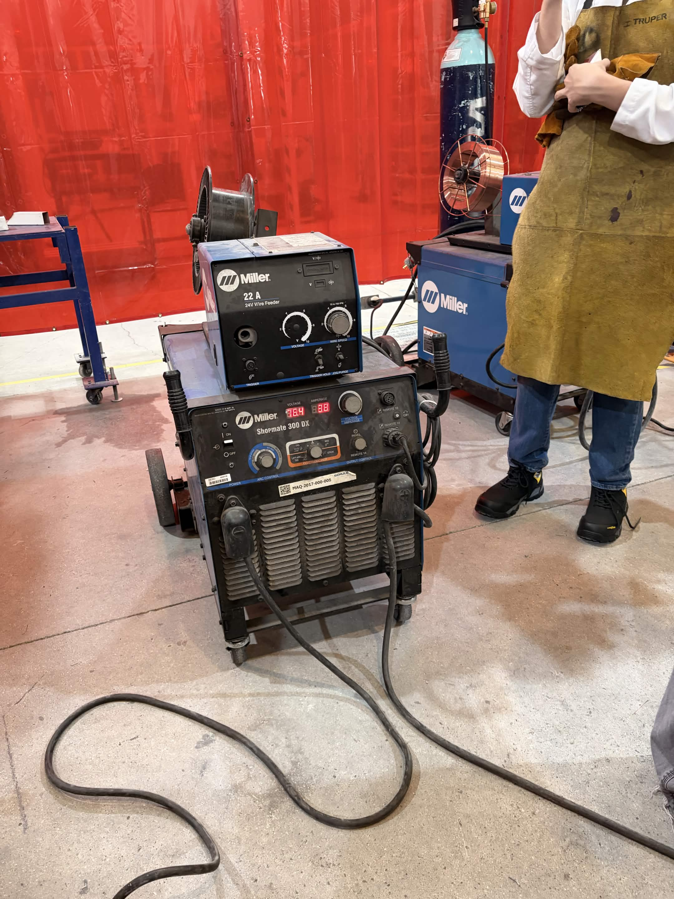
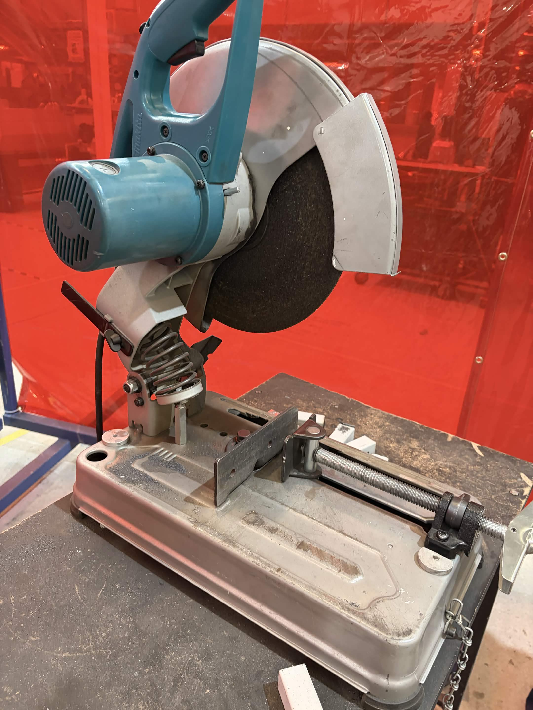
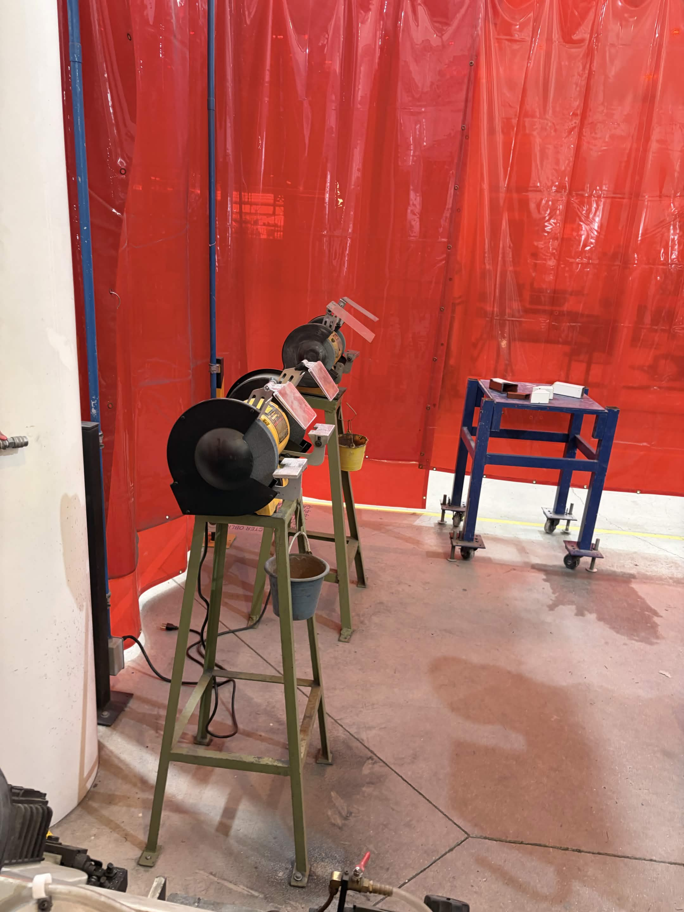
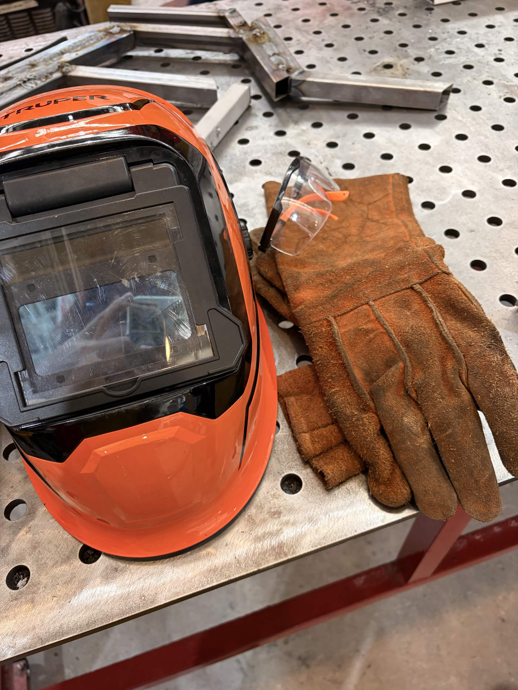

1. Introducción y Contexto
La manufactura y el ensamblaje físico representan etapas críticas en el desarrollo de sistemas mecatrónicos funcionales. Durante esta segunda semana de actividades, el enfoque principal consiste en llevar los diseños virtuales del plano digital a la realidad mediante el uso de herramientas de corte, preparación de perfiles y procesos de unión por soldadura.
Comprender el funcionamiento técnico de las máquinas de soldar, los equipos de corte abrasivo y las medidas de seguridad industrial es indispensable para garantizar la integridad estructural de los prototipos y salvaguardar la integridad física del operador.
2. Maquinaria, Funcionamiento y Evidencia
Durante la sesión de taller se emplean equipos especializados para el corte, habilitado y unión de los componentes metálicos:
2.1 Soldadora Industrial (Modelo Miller) y su Funcionamiento
¿Cómo funciona? Esta máquina opera mediante el proceso de soldadura por arco eléctrico con gas protector (MIG/MAG). Su funcionamiento se basa en generar un circuito eléctrico de alta corriente y bajo voltaje entre la pieza de trabajo y un alambre electrodo continuo que se alimenta de forma automática mediante un rodillo interno. Al acercar el alambre al metal base, se crea un arco eléctrico intenso que funde ambos materiales al instante. Simultáneamente, la máquina libera un flujo constante de gas inerte (o activo) desde un tanque externo para rodear la zona de fusión, evitando que el oxígeno y la humedad del aire contaminen el cordón y provoquen porosidades.

2.2 Sierra Sensitiva de Corte Rápido (Tronzadora) y su Funcionamiento
¿Cómo funciona? Este equipo funciona mediante un motor eléctrico de alta potencia que hace girar a gran velocidad un disco de corte abrasivo (compuesto de resina y granos de óxido de aluminio o circonio). El operador sujeta firmemente el perfil metálico en la mordaza de la sierra y acciona el brazo móvil hacia abajo. El disco de corte interactúa por fricción y alta velocidad contra el metal, desgastando y seccionando el material de manera limpia a lo largo de la línea de trazo deseada, permitiendo además realizar cortes inclinados a diferentes ángulos.

2.3 Esmeril de Banco y Mesas de Trabajo
El esmeril de banco utiliza dos muelas abrasivas giratorias para desbastar rebabas y afilar herramientas, mientras que las mesas metálicas perforadas proveen una superficie firme y nivelada con matrices de agujeros para fijar escuadras y alinear piezas.

3. Medidas de Seguridad y Equipo de Protección Personal (Safety)
El cumplimiento de los protocolos de seguridad industrial es obligatorio en el taller para prevenir accidentes por quemaduras, radiación o proyección de partículas:
- 3.1 Careta de Soldar: Protege los ojos y el rostro de la radiación ultravioleta (UV) e infrarroja (IR) emitida por el arco eléctrico, además de evitar lesiones por chispas o salpicaduras de metal fundido.
- 3.2 Guantes de Carnaza: Fabricados con piel gruesa y resistente al calor extremo, protegen las manos de quemaduras al manipular piezas calientes, rebabas filosas o al operar la máquina de soldar.
- 3.3 Mandil de Protección y Ropa Adecuada: Evita que las chispas y el calor directo alcancen el cuerpo o la ropa de calle, reduciendo drásticamente el riesgo de quemaduras en el torso y extremidades.
- 3.4 Gafas de Seguridad y Protección Ocular: Se utilizan de forma obligatoria durante las labores de corte con sierra sensitiva y esmerilado para evitar el ingreso de partículas o virutas metálicas a los ojos.
Evidencia de Equipo de Protección (Safety)
Se muestra la careta de soldar, los guantes de carnaza y los elementos de protección listos para su uso seguro antes de comenzar las prácticas en el taller.

4. Conclusiones
La práctica demuestra que la calidad de un ensamble mecatrónico no solo depende de un buen diseño virtual, sino también de comprender a fondo el funcionamiento físico de la maquinaria de corte y soldadura. El cumplimiento estricto de las normas de seguridad y el uso correcto del equipo de protección permiten realizar un trabajo limpio, eficiente y sin riesgos en el entorno de manufactura.
5. Fuentes de Información
Los fundamentos sobre procesos de unión, soldadura y seguridad industrial se basan en la siguiente literatura especializada:
- Groover, M. P. (2010). Fundamentals of Modern Manufacturing: Materials, Processes, and Systems. Wiley.
- American Welding Society (AWS). (2020). Welding Handbook: Welding Processes. AWS.
- Kalpakjian, S., & Schmid, S. R. (2014). Manufactura, ingeniería y tecnología. Pearson Educación.